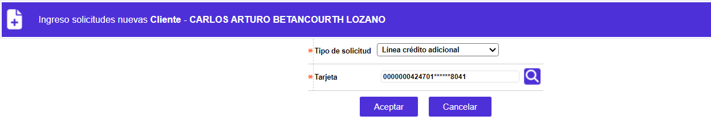
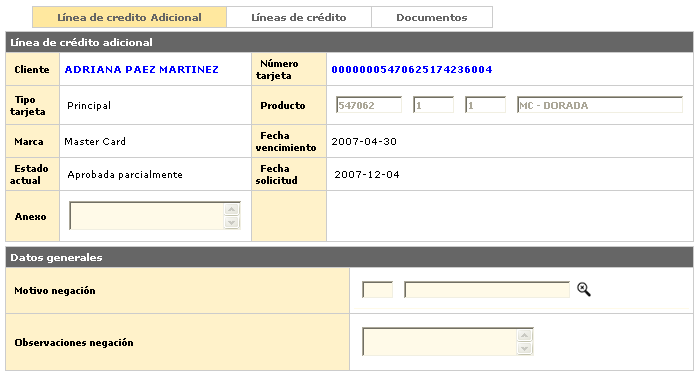
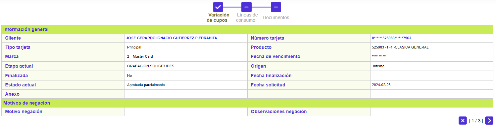

Linea crédito adicional crédito
A través de este wizard se puede registrar la solicitud de una nueva línea de crédito que demande el cliente de acuerdo con sus necesidades y con la especificación del producto, es decir, si en el momento en que el cliente solicitó el producto decidió no utilizar alguna línea de crédito de las que tiene definidas el producto, el cliente puede solicitar esa línea de crédito no solicitada inicialmente.
Cuando el tipo crédito es Titular con adicionales, el sistema muestra un formulario en el cual se muestran los clientes que dependen de la tarjeta principal.
En el formulario de Ingreso de solicitudes se selecciona la opción Linea crédito adicional crédito y la tarjeta a la cual se le ingresará la solicitud.

Tarjeta |
Campo con lista de valores que contiene los diferentes números de tarjeta del cliente. El usuario debe seleccionar aquella para la cual se desea solicitar la Linea crédito adicional. |
Adicionar: una vez se han seleccionado los datos anteriores, se deplegará un wizard de dos pasos. El primero de ellos contiene los bloques Información general y Motivos de negación:

Cliente |
Campo de salida desde el cual se podrá invocar la consulta del cliente al cual se le está ingresando la solicitud. |
Número tarjeta |
Campo de salida desde el cual se podrá invocar la consulta de tarjeta del cliente al cual se le está ingresando la solicitud. |
Tipo tarjeta |
Campo de salida que muestra qué tipo de tarjeta posee el cliente de la solicitud ingresada; puede ser Principal, Extendida, Amparada, o Adicional. |
Producto |
Estos campos se llenan automáticamente una vez ingresado el número de tarjeta asociado a la solicitud, permitiendo conocer el Segmento, Grupo de afinidad y Descripción que junto con el Bin conforman el producto crédito a reponer. |
Marca |
Campo de salida que ilustra la franquicia asociada al producto en la Definición del producto. |
Fecha Vencimiento |
Campo de salida en formato YYYY-MM-DD, que indica la fecha en que expirará el nuevo plástico de la tarjeta, cuando se ha parametrizado que el sistema deba calcular una nueva fecha de vencimiento. |
Estado solicitd |
Este campo ilustra la condición en que se encuentra la solicitud en cada momento, y que puede ser En zona gris, Negada totalmente, Negada parcialmente, Aprobada totalmente o Aprobada parcialmente. |
| Anexos | Campo que permite ingresar información relacionada con la solicitud, referente a documentos suministrados por el cliente u otros datos. |

Motivo negación |
Si aplica, contiene el código y la descripción de la causal de negación de la solicitud. |
| Observaciones negación | Campo que puede contener notas que ilustren las razones por las cuales fue denegada la solicitud. |
A través de los botones de la parte inferior derecha, se podrá cancelar el proceso o ir al segundo paso del wizard: Líneas de crédito .
Actualizar: Si en formulario del ingreso de solicitudes el usuario invoca la opción Actualizar, se despliega el siguiente formulario.

Detalle: De igual forma, si en formulario del ingreso de solicitudes el usuario invoca la opción Detalle, se despliega el siguiente formulario.
